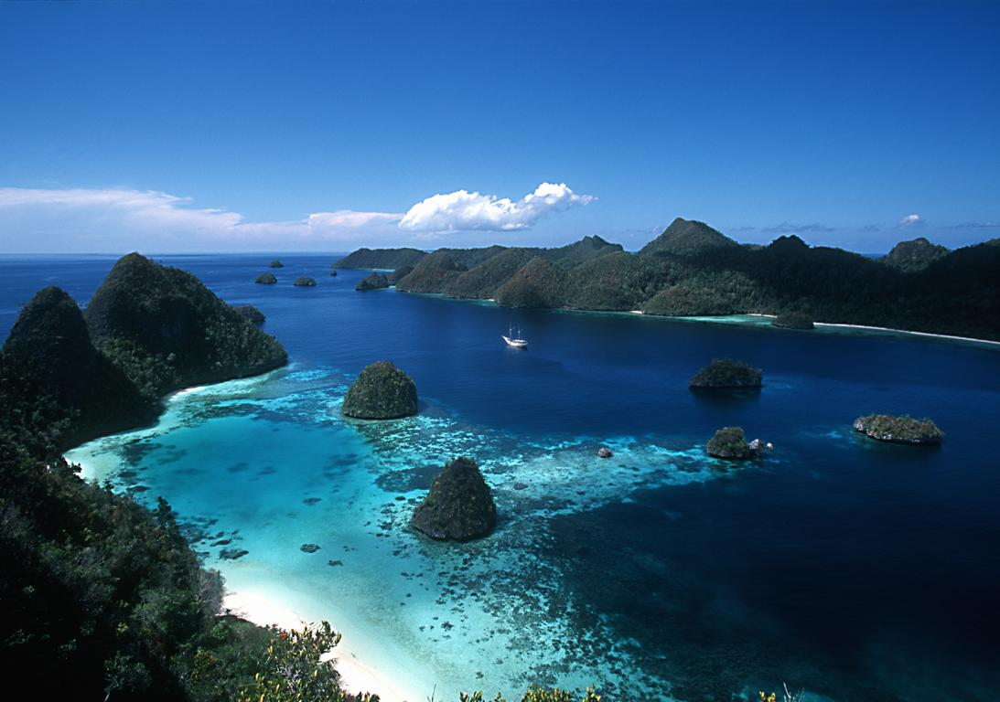

Banyak yang bilang bila Indonesia adalah negeri yang kaya raya. Tidak hanya sumber dayanya saja melainkan, alamnya pun juga kaya akan pesona yang tidak bisa didustakan. Banyak yang bilang pula jika, ingin mengenal negeri ini maka harus mengenal dunia bawah laut yang menjadi identitas Indonesia.
Memang, Ibu Pertiwi ini kaya akan potensi laut yang luar biasa. Bahkan, di Papua terdapat beberapa spesies yang hanya ada di lautan papua saja. di seluruh lautan dunia tidak ada. Salah satu kebanggaan mempunyai keindahan laut yang luar biasa. Seperti halnya Taman Nasional Bunaken yang namanya sudah lama dikenal sebagai surganya bawah laut.
Sebelum dunia pariwisata bergeliat seperti saat ini. Indonesia telah menetapkan Bunaken sebagai Taman Nasional yang dilindungi. Kurang lebih selama 27 tahun. Keindahan biota laut kawasan ini terjaga dengan sangat baik. Dimana kurang lebih 58 jenis terumbu karang dan 90 sepesies ikan menghuni tempat ini.
Menariknya lagi, di tempat ini hadir beberapa spesies langka yang hanya ada di Bunaken saja. Salah satunya adalah Penyu Sisik Hawksbill. Penyu langka ini setiap harinya berputar-putar dan bermain di sekitaran terumbu karang. Penyu ini biasanya bercanda tawa dengan pohon damselfih, clownfish, angelfish dan masih banyak lagi.
Dengan luas sekitar 280 mil kawasan ini pun mendapatkan penghargaan berharga dari Unesco sebagai situs warisan dunia. Penghargaan ini memang sangat penting mengingat beberapa nelayan masih sering nakal dalam menangkap ikan. Padahal dengan nakalnya, mereka mengancam terumbu karang yang ada di dalamnya.
Seperti diketahui bahwa banyak sekali spesies yang berada di Bunaken jenis terumbu karang yang beragam membuat kawasan ini selalu menjadi serbuan utama wisatawan nusantara dan mancanegara. Mereka pun tak segan-segan untuk menyapa ikan-ikan dan terumbu karang yang terlihat indah bagai lukisan ini.
Beberapa ikan yang akan menyapa sobat native bila berkunjung ke bawah adalah ikan kuda gusumi, ila gasi, lolosi ekor kuning, oci putih, goropa, dan pseudanthias. Sekawanan inilah yang bisa menjadi objek foto sobat native bila berada di bawah. Mereka yang sudah paham dengan para wisatawan pasti dengan senang hati bergaya mengikuti irama untuk diabadikan dalam sebuah bingkai foto.
Selain terumbu karang, Bunaken juga memiliki garis pantai yang esoktis dimana terdapat tumbuhan mangrove dengan jenis rhizopora sp., lumritzera sp., sonneratis sp., dan Brugukera sp.. Sekawanan mangrove yang akan menyapa sobat native dan memberikan pesona yang diinginkan.
Ada juga beberapa tumbuhan yang menghadirkan kesejukan dan keteduhan seperti pohon palem, silar, sagu, kelapa, dan woka. Mereka dengan sigap memberikan nuansa angin yang tidak akan pernah berhenti apalagi, saat panas terik matahari menyengat.
Tidak ketinggalan pula beberapa jenis kepiting yang imut-imut namun sedikit galak, udang, moukuska, beberapa jenis burung seperti burung camar, merpati laut, dan juga bangau, tidak ketinggalan pula jenis monyet hitam sulawesi, polecat, dan rusa.
Bunaken memang surganya para penyelam dimana ada kurang lebih 20 spot diving yang bisa digunakan untuk menyelam. 12 diantaranya bisa ditemukan di pulau bunaken sendiri. Keunikan dari penyelaman disini adalah jarak pandang yang bisa mencapai 20 meter. Artinya kondisi air yang sangat jernih.
saat-saat tertentu jarak pandang di kawasan ini bisa mencapai kurang lebih 35 meter. Hebat sekali bukan. Selain itu di tempat ini terdapat dinding karang raksasa yang melengkung dan berbentuk vertical. Fungsi dari dinding ini adalah untuk makanan ikan-ikan kecil yang ada di laut.
Banyak yang mengatakan bahwa keindahan laut di bunaken tidak ada yang bisa menandingi. Keindahannya memang sangat luar biasa. Semua titik penyelaman di dunia bisa kalah bila dibandingkan di kawasan ini. oleh karena itu, banyak wisatawan mancanegara yang datang untuk membuktikan sendiri keindahannya.
Tidak hanya pesona bawah lautnya yang terkesan sangat ramah. Penduduknya pun juga terkenal sangat ramah serta murah senyum. Sebagian besar dari mereka pandai dan fasih berbahasa Inggris sebagai salah satu bahasa yang digunakan untuk menyapa wisatawan mancanegara.
Bahkan, beberapa nelayan yang biasa mengantar pengunjung diving fasih beberapa bahasa. Mereka terus belajar agar bisa memberikan pelayanan terbaik. Sehingga pengunjung merasa seperti berada di rumah sendiri.